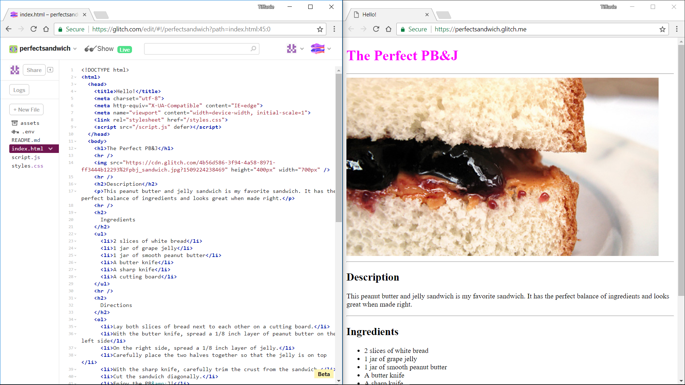

.jpg)
Do you have a favorite recipe that you want to share with the world? With this project we will use code to write a recipe that looks as good as it tastes.
A great project for: Foodies, chefs, sandwich aficionados, and anyone looking to learn the basics of web design and Glitch.
Make sure to create an account on Glitch to save your projects! Navigate to glitch.com
Our very first step with each lesson will be to create a new Glitch project. On the main Glitch website you will see a button that says "Start a New Project", and below that there is a section that says "Your Projects". Keep scrolling to see Featured Projects, and down farther a section called Hello Worlds - these are starter, or "boilerplate", projects that will help you become familiar with many different languages and projects you can make. After that are many more example projects in different categories, take a look whenever you want. Now, let’s make our own program!
Now we’re going to take a look at our new project. All Glitch projects have the same features so let’s take a second to familiarize ourselves with them.
Integrated Development Environment
When you begin a new project you can see the Glitch integrated development environment, or IDE for short. What does that mean? An IDE is a software application that allows you as the programmer to develop your software in a fluid way. Rather than switching between many programs, this has it all in one! A source code editor (which usually has autocomplete abilities), build tools (that compile your source code into that pretty final website!), and debugging tools (that shows you where errors are). What we’re looking at is the source code for our new web project, keep reading to learn about the parts of this IDE.
Awesome feature alert!
If you ever have trouble with your code and get stuck Glitch has this awesome feature to get help from the community. All you have to do is highlight the lines of code that you think are the issue and a little icon with a raised hand will appear. Click on that, fill it out, and click the "Ask for Help" button. This will show up on the main Glitch website where other users can look at your code and offer help! Neat, huh?
Now that we know a little bit about what’s under the hood let’s take a look at what our project looks like right now. Click the "Show Live" button to see your site.
Live View
Place the development environment and the live preview of your website side by side as displayed above. To do this in many browsers you can drag one of the tabs out of the window to open it in a new window. Now resize and move them next to each other, that way you can code and see your changes instantly!
Now that we know our way around let’s start coding! All Glitch website projects start with a little bit of code already in them so let’s use what’s there and build on it.
<h1>Hi there!</h1>
<h1>The Perfect PB&J</h1>
Now that we know how to change the content of tags, let’s change a few more and add some new ones to start putting together our recipe.
<p>I'm your cool new webpage. Made with <a href="https://www.glitch.com">Glitch</a></p>
Ours looks like this:
<p>This peanut butter and jelly sandwich is my favorite sandwich. It has the perfect balance of ingredients and looks great when made right.</p>
Your code should look like this:
<h1>The Perfect PB&J</h1> <h2>Description</h2> <p>This peanut butter and jelly sandwich is my favorite sandwich. It has the perfect balance of ingredients and looks great when made right.</p>

Now our recipe title and section title are butting into one another. That’s no good. Let’s add a line between them to keep them separate and divide the recipe into distinct sections.
Between the <h1> and <h2> tags make a new line and add a single <hr /> tag.
It should look like this:
<h1>The Perfect PB&J</h1> <hr /> <h2>Description</h2>
Remember, all tags need to be closed. There are, however, some elements that are simple and don't contain content. These tags close themselves, using the slash (/) at the end of the tag.
The <hr /> tag is one of those tags. HR stands for “Horizontal Rule” and it’s an HTML element designed to divide content on a page.
Take a look. See how the <hr /> line separates the title from the description?
Any good recipe needs a list of ingredients. Fortunately HTML gives us an easy way to make list using tags.
Our code looks like this:
<hr /> <h2> Ingredients </h2>
Now let’s add a new type of tag called an “un-ordered list.” An un-ordered list tag produces a nice list of things, each with their own bullet point. In fact, you’re reading an un-ordered list right now!
Un-ordered lists actually use two tags. One starts and ends the list. It looks like this <ul>. The other sits in between those tags and identifies a list item. It looks like this <li>.
Ours looks like this:
<h2> Ingredients </h2> <ul> <li>2 slices of white bread</li> <li>1 jar of grape jelly</li> <li>1 jar of smooth peanut butter</li> <li>A butter knife</li> <li>A sharp knife</li> <li>A cutting board</li> </ul>
In the last step, we made an un-ordered list for our ingredients. Now let’s make an ordered list to describe each step we need to make our recipe. Ordered lists look like un-ordered lists except they have numbers instead of bullets.
Our code looks like this:
<hr /> <h2> Directions </h2> <ol> <li>Lay both slices of bread next to each other on a cutting board.</li> <li>With the butter knife, spread a 1/8 inch layer of peanut butter on the left side</li> <li>On the right side, spread a 1/8 inch layer of jelly.</li> <li>Carefully place the two halves together so that the jelly is on top </li> <li>With the sharp knife, carefully trim the crust from the sandwich.</li> <li>Cut the sandwich diagonally.</li> <li>Enjoy the PB&J!</li> </ol>

Our recipe has come together nicely so far. We have all the basic elements in place. What we need now is an image. So let’s add one. If you don’t have an image of your own you can use this one for now:

Drag it to your desktop or download it someplace where you can get access to it easily. We will be uploading it into Glitch soon.
It should look like this. Notice the src="" part. That's an attribute of the img tag that will let us specify the image we want to load.
<hr /> <img src="" /> <hr />
It should look something like this:
<img src="https://cdn.glitch.com/4b56d586-3f94-4a58-8971-ff3444b12293%2Fpbj_sandwich.jpg?1509224238469" />
Here's an example:
<img src="https://cdn.glitch.com/4b56d586-3f94-4a58-8971-ff3444b12293%2Fpbj_sandwich.jpg?1509224238469" height="400px" width="700px" />
Try adding height and width attributes to your <img /> tag. See what happens when you only use either the height or width attribute, but not the other. Did the image get squished or did it stretch evenly? Play around with different measurements until you like the way it looks on the page.
So far we’ve only been adding new code to the HTML section. This is the content of our project, the text and images that make up our recipe. The text we’ve added, the headings, the lists, and the paragraphs all have a default style applied to them. The browser is picking the type, size, and color of the font. Let’s customize it the way we want using CSS.
h1 { color: fuchsia; }
CSS is what we use to style HTML elements. Just like HTML tags, it needs to be written a specific way to work.
Generally, CSS styles look like this, keep an eye on those curly braces. They are very important and mark the start and finish of a style:
selector {
property: value;
}
h1 { color: fuchsia; padding-left: 50px; padding-top: 30px; }

Now that we know a little about styles, let’s start writing our own. Let's begin by making our content centered.
Your code should look like this:
body {
}
body { width: 700px; }
body { width: 700px; margin: auto; }
h1 { color: fuchsia; padding-left: 50px; padding-top: 30px; font-family: courier, monospace; font-size: 50px; font-weight: bold; }
Take a look, the heading is now a different font, size, and bold!
Let's mix up the color on the page to make it more interesting.
You can use color names to apply colors in CSS. These are generic values, though and aren’t always exactly the color you want. If you want a little more control over color then you’ll need to use Hex values.
Hex values are codes that help a browser show color. They look like this: #FF0000. That’s the hex value for red. Hex codes are six digits long and contain only the number 0-9 and the letters A-F.
Here are some other example hex values:
#00FF00 - only green
#0000FF - only blue
#C0392B - softer red
#16A085 - softer green
#3498D8 - softer blue
#D977D4 - pink
#F1C40F - yellow
#F39C12 - orange
#FFFFFF - white
#000000 - black
#999999 - grey
Instead of a color name try adding a hex value into the color property and see what happens. Try changing the numbers as well to see what new colors you can create. You can also head over to Google and search for "color picker" which will bring up a color selection tool. This will display the Hex value for the color, as well as some others that you will learn about later. We've picked a nice blue color with a Hex value.
This is what our code looks like now:
h1 { color: #119be0; padding-left: 50px; padding-top: 30px; font-family: courier, monospace; font-size: 50px; font-weight: bold; }
Now that we’ve styled our h1 we’ve got to style everything else. The good news is that we’ve actually finished most of the work. All we need to do now is copy the h1 style we’ve created and change a few things to create new styles for h2, p, and li. Let’s start with h2.
Our code looks like this:
h2 { color: #119be0; padding-left: 50px; font-family: courier, monospace; font-size: 30px; font-weight: bold; }
Congrats, you’ve finished your recipe! It’s nicely laid out and easy to read, isn’t it? Good thing, too. You’ve probably worked up an appetite with all this coding. Now you have an idea of what to make for lunch.
Now that we have our recipe, let’s see what else we can do with the skills we’ve learned.
Maybe you don’t want a sandwich. Maybe you’re in the mood for some cake? Let’s rewrite the recipe to be your favorite meal, whatever it is. Try adding longer, more complicated steps. Maybe you need to add more sections?
Sometimes it helps to have a visual for each step of a recipe. Try adding images to each step that show the stages of the recipe.
You've got a taste, but there’s a whole lot more that you can do with CSS and HTML. Try these other coder projects to make more cool things and learn more useful stuff.
Note: Remember, if the tutorials have been converted for the Glitch IDE the "Open Project" button will be yellow, otherwise they are purple and will lead you to the original Coder for Pi website.
.jpg)
Paint makes a mess. Code is so much cleaner. Use this project to recreate a classic Modern artwork, Piet Mondrian’s Composition II in Red, Blue, and Yellow in your browser with CSS and HTML.
Open Project.jpg)
Make a simple game to play with your friends and family. See if you can find all the penguins without waking the Yeti!
Open Project